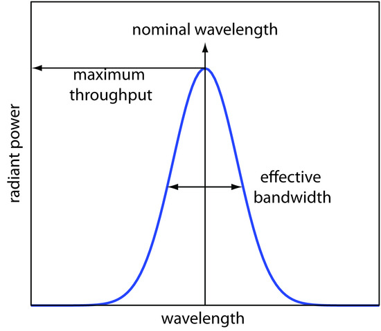
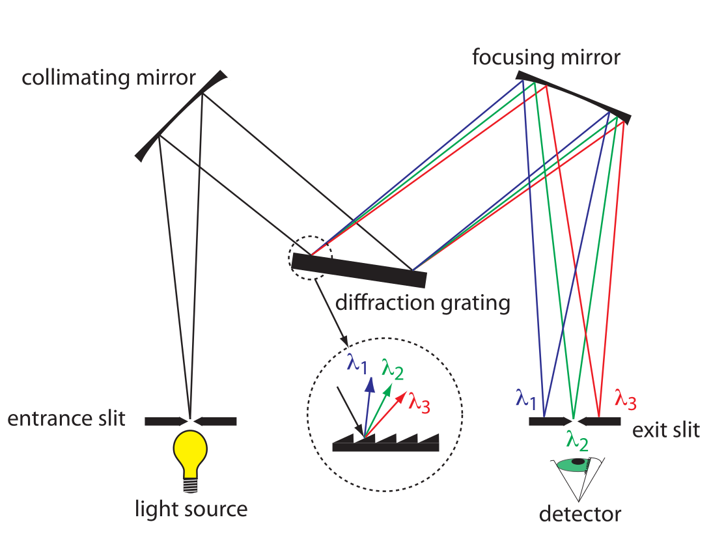
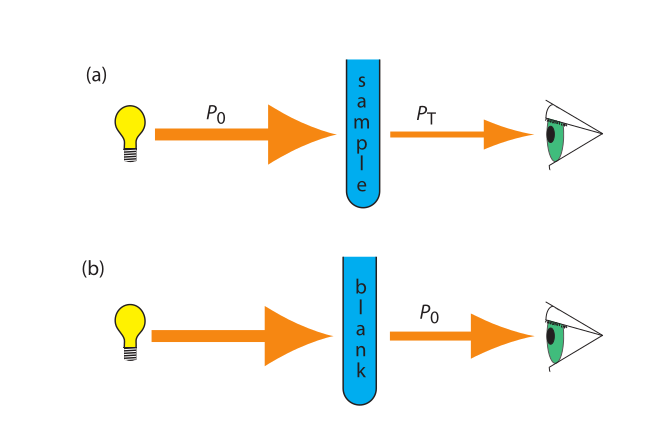
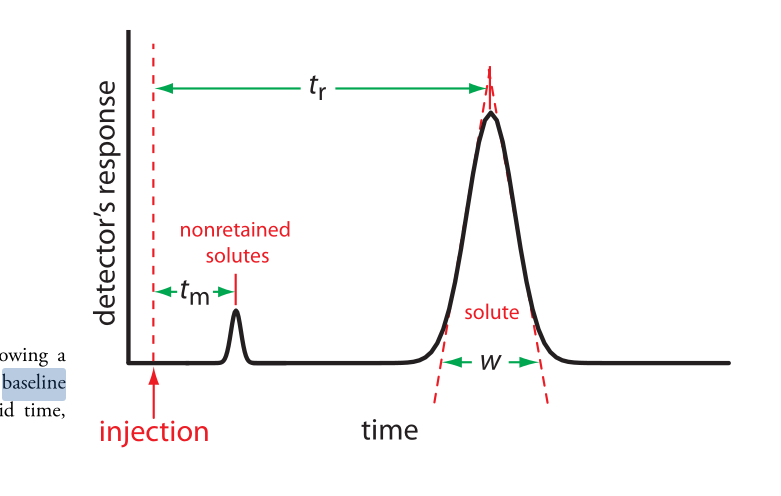
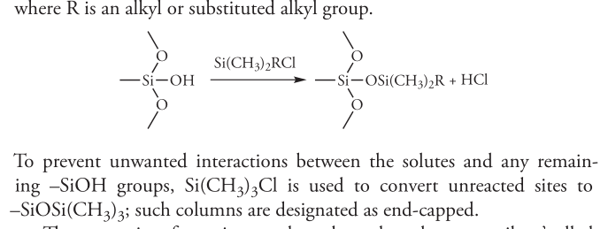

1: Analytical Concepts & Statistics
- Define analytical terminology (e.g., blank, matrix, analyte, assay, quantitative, qualitative)
- assay: is process of determining the amount of analyte (substance being measured) in sample
- analyte: the substance being measured
- qualitative analysis: (identification)
- quantitative analysis: (quantity)
- sample matrix: everything but the analyte
- blank: chemist made sample that lacks analyte
- solvent: same solvent as sample solutions
- method: same solvents and reagents
- sample: tries to approximate the sample matrix, everything but analyte
- Describe figures of merit and use them to characterize and compare methods.
- LOD, LOQ
- accuracy & precision
- selectivity
- interferent: chemical that causes systematic error in measured quantity
- masking agent: prevents components in sample matrix from interfering with analysis
- analytical method
- interference with analyte: analyte binds with matrix
- interference with reagent: matrix binds with reagent
- background interference
- sensitivity: determined by slope (how small of a change can be measured)
- range: concentration range where we have good linearity, accuracy, precision
- dynamic range: range instrument can measure
- robustness: ability of method to withstand small, uncontrolled changes in operation parameters
- Identify potential challenges related to sample collection and preparation.
- Calculate the detection limit.
- noise: random fluctuations in measured signal
- blank: a constant (like control) signal measured in absence of analyte
- limit of detection (LOD): smallest concentration of absolute amount of analyte with signal much larger than blank
- (signal) LOD: units as signal (instrument maker) Smb + zσmb
- (sample) LOD: amount/concentration (user)
- calibration curve: σDL = 3σmb/m
- Differentiate between random and systematic sources of uncertainty (error) and explain how repeated measurements can help reduce uncertainty.
- absolute error: x̄ − μ
- relative error: $$\frac{\bar{x} - \mu}{\mu} \times 100 \%$$
- random uncertainty: can’t replicate, contributes to imprecision => quantify with stats
- systematic uncertainty: contribute to inaccuracy, repeats, can correct for
- proportional error: %, issue for large signals
- constant error: always some absolute value, issue for small signals
- Describe how the sample matrix can affect measurements.
- matrix effects: combined effect of non-analyte components in sample on measurement of analyte
- Explain the 3 methods of calibration: external standards, standard addition and internal standards
- external standard: series of solutions of known concentration of analyte
- standard addition: matrix too complex, so use standard addition
- prepare standard solutions but with sample and add analyte to “sample”
- find x-intercept: when y = 0, this is the “original” value of x (without the shift in y axis)
- the linear line has been “shifted” on the y axis

- internal standard: intentionally add substance that is not expected to be found in sample (not the analyte) but behaves similarly
- constant amount of internal standard => constant signal
- changing concentrations of analyte
- plot ratio between analyte and internal standard vs. ratio of their concentrations $$\frac{S_{A}}{S_{IS}}$$ vs. $$\frac{[A]}{[IS]}$$
- Explain the standard addition and internal standard methods of calibration and how they can compensate for certain types of interferences.
- external standard:
- create standard solutions with varying/known conc. of analyte
- interpolate unknown from CC
- can’t account for matrix or inconsistencies in instrument
- standard addition
- add known quantities of analyte to unknown solution
- extrapolate unknown from CC
- accounts for matrix
- internal standard:
- add known amount of different (but similar) compound to unknown and standards
- ratio of signal from analyte to signal from internal standard
- external standard:
- Interpret or create calibration curves based on external standards, standard additions, or internal standards to determine unknown quantities (e.g., analyte concentration in a sample).
- Describe the method of least squares in linear regression
- Apply error propagation and appropriate significant figures in reporting calculated values.
- Explain how a Gaussian distribution represents randomly distributed data and forms the basis for confidence limits and statistical tests.
- gaussian distribution: bell curve
- 1sd: 68%
- 2sd: 95%
- 3sd: 99%
- population vs. sample:
- sample sd approaches population sd as N > 20
- as N increases, sd decreases
- gaussian distribution: bell curve
- Calculate an average, standard deviation, and confidence limits.
- RSD: $$\frac{\sigma}{\bar{x}} \times 100 \%$$
- CI: probability a difference exists when it doesn’t
- 99% is a larger range than 95% (95% covers smaller area under the guassian distribution)
- Select and apply appropriate statistics to test a hypothesis (e.g., comparison of means, comparison of precision, rejection of outliers).
student’s t value: permits use of sample data to test hypothesis without knowing population sd
significance testing: is difference between two values too large to be explained by random uncertainty
case 1 t-test case 2 t test case 3 t-test grubb’s test compare experi. to true compare two experi. results compare two methods outlier? - case 1 t-test: $$t_{exp} = \frac{|\bar{x} - \mu|\sqrt{N}}{\sigma}$$, and then compare, texp > ttable means significant difference
- case 2 t-test (do two experimental values agree with each other?):
- same sd: must pool the sds
- $$\bar{x_1} - \bar{x_2} = +/- t \sigma_{pool} \sqrt{\frac{N_1 + N_2}{N_1N N_2}}$$
- if LHS < RHS: the 2 means are not statistically different
- $$\bar{x_1} - \bar{x_2} = +/- t \sigma_{pool} \sqrt{\frac{N_1 + N_2}{N_1N N_2}}$$
- use f-test to determine if two SDs are statistically different: $$\frac{\sigma^2_1}{\sigma^2_2}$$, find Fexp and compare with table value => then do the work for different SDs
- same sd: must pool the sds
case 3 t-test: paired/matched measurement data
- comparing single measurements made with two methods on several different samples
- before and after (drug trials, same people)
grubb’s test: determine outlier, make sure to remove if it is an outlier
other misc. lecture notes
An Introduction to Analytical Measurements
- signal
- visual detection: simple, low-cost, subjective, not sensitive, large sample volumes, low-throughput (??)
- electrical detection: objective, more sensitive, faster, automate, costly, maintenance, calibration
- voltage
- current
- transducer: converts input stimulus into electrical output
- measurement:
- signal-to-noise ratio: $$\frac{S}{N}$$ is proportional to $$\sqrt{n}$$
- averaged signal S, averaged noise N
- signal-to-noise ratio: $$\frac{S}{N}$$ is proportional to $$\sqrt{n}$$
- controls:
- positive: standard sample with known quantity of analyte
- prevents situation when there should be a signal but there is no signal (false negative)
- negative: standard sample with no analyte
- prevents situation when there should be no signal and there is a signal (false positive)
- positive: standard sample with known quantity of analyte
- sig figs:
- pH: pH of 2.45, digits after decimal are how many sig figs the conc. has
- exact number has infinite number of sig figs
- signal
2: Equilibrium and Volumetric Analysis
- equilibrium constant
- activity
- weak acid and weak base
- polyprotic acid
- formulas:
- $$[H^+] = \sqrt{\frac{K_{a2}[HA^-] + K_w}{1 + \frac{[HA^-]}{K_{a1}}}}$$
- $$[H^+] = \sqrt{K_{a2}K_{a1}}$$
- pH = 1/2(pKa1+pKa2) this is also how you get isoelectric point
- formulas:
- amphiprotic substance
- Recognize compounds that participate in equilibrium reactions or otherwise have an effect on those reactions (e.g., acids, bases, ions that form insoluble or sparingly salts, ligands).
- Define the following terms mathematically and in your own words: Ka, Kb, Kw, Ksp, Kf, Kd.
- Write mass balance, charge balance and solubility expressions for an equilibrium problem.
- Relate physical constants (Ka, Kb, Ksp, Kf) to trends in the shape of titration curves and distribution diagrams.
- Select an appropriate method of endpoint detection and/or indicator (from a limited group of options) for a given analysis and justify your choice.
- Write the equilibrium expression(s) for a complexation titration
- Qualitatively predict the consequences of disturbing a system at equilibrium (e.g., adjustment of pH, changes in concentration, or the addition of new species).
- Identify relevant equations and make appropriate assumptions to quantitatively analyze an equilibrium system.
Chemical Equilibrium Applied to Analytical Measurements
lecture 6
- systematic treatment of equilibria
- as many equations as unknowns
- chemical equilibrium constant expressions
- charge balance charge on cation1[cation1] + charge on cation2[cation2] = charge on anion1[anion1] + charge on anion2[anion2]
- mass balance (many)
- formal: moles of original chemical formula in solution, without regard for species that already exist
- as many equations as unknowns
- alpha diagrams: can plot alpha as a function of pH
Solution Equilibrium and Systematic Treatment of Chemical Equilibrium
lecture 7
- complexing agent: increases solubility of precipiate
- complex formation: adding excess of B doesn’t always precipiate max amount of A (you can have multiple species of complex)
- titrant: solution of known composition and concentration
- titrand: unknown solution
- titrations:
- acid-base
- complexometric titrations (metal-ligand)
- precipiatation (want ppt)
- redox (titrant is an oxidizing or reducing agent)
- acid-base titrations
- strong acid: eq point always at 7
- weak acid: half eq point = pKa
- Henderson-Hasselbalch Equation: $$pH = pK_a + log \frac{[A^-]}{[HA]}$$
- diprotic acid with strong base (how to calculate pH throughout the titration process): (REVIEW)
- buffer region: H-H equation
- compare $Ka$s
- endpoints for polyprotic species:
- if $$\frac{K_{a,1}}{K_{a,2}}$$ larger than or equal 104, 1st endpoint will be clear (endpoint can disappear into the other)
- if pKa, 2 less than or equal 8, 2nd endpoint will be clear (if larger than 8, then Ka2 too weak)
- triprotic: third endpoint around 12.7, too small, can’t see
- buffers
- effective range: pKa + − 1
- acid-base indicator effective within the same range, but in practice is 0.5
- color transition
Polyprotic Acid Equilibria, Polyprotic Acid-Base Titrations
lecture 8
- indicators: are actually acids and bases
- range Pka plus or minus 1, in practice 0.5
- how to ensure we see the change of color in indicator?
- strong acid: eq point occurs at 7, very steep, the steep portion is almost vertical
- weak acid: Pka of indicator much larger than Pka of weak acid, or indicator changes color too early because not as steep (?), since eq point occurs after pH 7
- weak base: eq point occurs before 7
- gravimetric methods
- obtain analyte by precipitating it
- precipitation titration
- titrant: AgNO3
- argentometric titrations:
- free [Ag+] decreases with small value of Ksp
- small Ksp means bigger number in demoninator (more ppt), pAg is larger
- for titrating: anything that is insoluble when reacted with silver
- endpoint: can be measuring removed or excess
fluorescein:
- titration of halides
- before: colloidal AgX is neg
- after: colloidal AgX is pos
- it depends on the ratio between Ag+ and X− which determines its charge
- titration graph: after eq point, all indicators converge to the same behaviour
- “colloid is a mixture in which one substance consisting of microscopically dispersed insoluble particles is suspended throughout another substance”
- endpoint: can be measuring removed or excess
fluorescein:
- free [Ag+] decreases with small value of Ksp
- EDTA titration
- how to deal with EDTA titrations at other pH:
- $$\alpha_6 = \frac{[Y^{4-}]}{C_{EDTA}}$$
- from Mn+ + Y4− ⇔ MY(n−4)+, we get $$K_f = \frac{[MY^{(n-4)+}]}{[M^{n+}] \alpha_6 c_{EDTA}}$$
- complexing agent: EDTA at basic pH
- for titrating: metal
- pH dependence: as pH increases, amount of unbound metal decreases
- auxiliary complexing agent: ammonia to complex cations and maintain solubility at basic pH
- ACA needs larger binding constant than EDTA but smaller formation constant
- why need basic pH? because many metals precipitate as hydroxoides if pH is too high
- concentration of Y−4 is the most at basic pH (it is pH dependent)
- to use a lower pH: need α6, defines mole fraction of Y−4 at given pH
- rewrite MY formation to use α6cEDTA = [Y−4]
- this gives a conditional formation constant: Kf′(pH) = α6Kf
- rewrite MY formation to use α6cEDTA = [Y−4]
- too much ACA decreases sharpness of endpoint M2+ + 4NH3 ⇔ Zn(NH3)42+ Zn(NH3)42+ + Y4− ⇔ ZnY2− + 4NH3
- to use a lower pH: need α6, defines mole fraction of Y−4 at given pH
- auxiliary complexing agent: ammonia to complex cations and maintain solubility at basic pH
- how to deal with EDTA titrations at other pH:
Complexation Equilibria - Quantitative EDTA Titrations
lecture 9
- indicators for EDTA:
- Eriochrome Black T: only works on some metals, can use backtitration to use with other metals
- orange to red/violet
- Eriochrome Black T: only works on some metals, can use backtitration to use with other metals
- complex titrations
- add masking agents to hide certain metals, needs to have stronger Kf than EDTA
- demasking agent: another metal that binds with masking agent
- auxillary complexing agent: keep metal in solution
- indirect titration
- if titration is slow
- no suitible indicator
- no useful direct titration reaction
- you can add A + B, with B in known excess
- measure leftover B with C
- you can add A + B, with B in known excess
- applications: volhard titration
- titrant: SCN−
- determine: Ag+
- find out how much halide
- indicator: Fe+3
- need to ensure KfAgSCN > KfFeSCN
- back titration for halide determination
- titrate with halide solution with excess Ag
- when all the Cl has been bound, you have Ag in excess
- start titrating the excess Ag with Fe. You add SCN until the solution turns red -> endpoint
- SCN^- turns red at first instance of excess SCN^- by reacting with iron
- titrate with halide solution with excess Ag
- displacement titrations
- want to analyse a metal with EDTA, but if the matrix is unknown, other metals may bind to EDTA that is not the metal of interest
- instead, react Ca2+ with MgY+; Ca2+ has higher Kf will displace Mg2+
- titrate the freed Mg2+ in solution ? we titrate the excess Mg with EDTA?
More Volumetric Analysis
3: Electrochemistry and Potentiometry
- Define electric potential.
- Draw and label a diagram of a galvanic cell, write the shorthand cell notation for a galvanic cell, and explain the role of each component in galvanic cell.
- Write the Nernst equation and use it and standard potentials to calculate galvanic cell potentials.
- Explain how potentiometry can be used to determine analyte concentrations.
- Describe how a redox titration can be used to determine the concentration of an analyte, calculate the concentration of the unknown from redox titration data, and calculate the cell potential at different points during a redox titration.
- Describe the design and use of reference electrodes, including drawing simple diagrams of common reference electrodes.
- Describe the origin of membrane potentials and their analytical utility in different types of ion selective electrodes.
- Draw and label a diagram of a glass/pH electrode. Explain the principles of its operation and its sensitivity to pH.
- Write and apply the Nikolsky equation.
- Draw diagrams and explain the principles of operation of liquid membrane and solid-state ISEs.
Fundamentals of Electrochemistry
lecture 10/11
- what is electrochemistry: electrical measurements of chemical systems
- inexpensive equipment, can measure complex samples with little sample prep
- reducing/oxidizing:
- reducing agent: is oxidized, so ON increases, and electrons are lost
- oxidizing agent: is reduced, so ON decreases, and electrons are gained
- cell types
- galvanic cell
- the opposite of electrolytic cell
- electrons spontaneously go towards positive charge
- anode (-): electrons leave, so oxidation occurs
- cathode (+): electrons arrive, reduction occurs
- the opposite of electrolytic cell
- electrolytic cell
- requires electricity
- electrical energy into chemical energy
- cell potential is negative
- galvanic cell
- salt bridge
- ensures the solution stays neutral
- completes circuit
- need ions with the same hydrated size so that they move at the same rate
- don’t want direct mixing of reduction/oxidation
- potential
- galvanic: initally positive (electrons want to move from anode to cathode)
- at eq: potential is 0 [Cu$2+$] << 1.00 M << [Zn$2+$]
- reflects driving force of redex reaction towards eq
- half-cell and standard potentials:
- combo of standard half-cells determine overall cell potential
- V1 < V2
- V1: weak oxidizing agent, less easily reduced
- V2: stronger oxidizing agent, more easily reduced
- standard reduction potential: Ecell = Ecathode - Eanode
- Edeg is tabulated for reduction reactions, positive if spontaneous relative to SHE
- SHE is not easy to work with, use other standards like SCE
- Edeg is tabulated for reduction reactions, positive if spontaneous relative to SHE
- V1 < V2
- combo of standard half-cells determine overall cell potential
- galvanic: initally positive (electrons want to move from anode to cathode)
- ions in solution: concentration vs activity
- ions interact electrostatically
- can interact with other things in solution that have charge
- other ions can partially shield the ions of interest (like Ca2+ and SO42−)
- this means Ksp gets larger with more salt added (NaCl also partially sheild), takes more CaSO4 to dissolve in water as you add more NaCl -> activity
activity
- value of concentration equilibrium constants increase at high electrolyte concentration
- what does this mean chemically: there is more of the ion product in solution
- concentration equilibrium constants don’t consider other dissolved ions and their electrostatic interations and ion-ion interactions
- solubility increases???
- activity coefficients: ai = γic
- decrease as ionic strength increases
- thermodynamic eq constant is written in terms of activities
- can ignore for very dilute solutions
- value of concentration equilibrium constants increase at high electrolyte concentration
ionic strength
- the net effect of dissolved electrolytes: $$\mu = \frac{1}{2} \Sigma_i c_i z^2_i$$
- μ ∝ ci, zi
- monovalent < divalent < trivalent
- thus for monovalent salts, ionic strength equals molarity
- for other salts, ionic strength > molarity
- monovalent < divalent < trivalent
- μ ∝ ci, zi
- the net effect of dissolved electrolytes: $$\mu = \frac{1}{2} \Sigma_i c_i z^2_i$$
activity in dilute solutions
- for neutral molecules, activity coefficient is 1
- for ions: use the debye-huckel limiting law (useful for when ionic strength is less than 0.005 M at 25 C): $$log \gamma_i = -0.51 z^2_i \sqrt{\mu}$$
- extended: requires temperature dependent coefficients and effective diameter of hydrated ion
free energy and potential
- ΔG = − nFE, where E is potential difference, F is Faraday constant, n is unit charges per molecule
- maxiumum work extracted assuming no heat loss
- we get the Nerst equation by combining the above equation with gibbs equation:
$$-nFE = -nFE^{\circ} + RT \ln Q \\
E = E^\circ - \frac{RT}{nF} \ln Q$$
- when K = Q, cell potential is 0 and there is no driving force
- use Nerst equation to find potential at non-standard conditions, replace Q to get: $$E = E^\circ - \frac{RT}{nF} \ln \frac{\gamma_C^c [C]^c\gamma_D^d[D]^d}{\gamma_A^a[A]^a \gamma_B^b[B]^b}$$
- when K = Q, cell potential is 0 and there is no driving force
- can us Nerst on half and full reactions (for half, if there is solid reactant or product, just least as 1)
- ΔG = − nFE, where E is potential difference, F is Faraday constant, n is unit charges per molecule
Analytical Measurements using Electrochemical Cells
lecture 12/13
- harvey:: 11A, 11B.1-.3, 9D
- key points:
- tied equilibria -> make electrode whose potential is fixed
- how Nerst equation shows us that
- common reference electrodes
- indicator electrodes
- indicator + reference electrodes -> setup for redox titration
- pre-treatment of analyte
- common reagents for pre-treatment and/or redox titrants
- tied equilibria -> make electrode whose potential is fixed
Electrodes
salt bridges are built into reference cell
- SCE: paste of mercury and calomel (Hg$2Cl2)
- KCl filling solution
- Hg$2Cl2 (s) + 2e− -> 2Hg (l) + 2Cl−
- when Cl concentration increases, you crash out KCl?
- [Cl^${-}$] essentially constant
- at 25C, Eo = 0.244 V for saturated KCl
- Silver/SilverChloride
- silver wire with layer of AgCl
- KCl filling solution:
- AgCl (s) -> Ag (s) + Cl−
- at 25C, Eo = 0.197 V for saturated KCl
- at 25C, Eo = 0.205 V for 3.5 M KCl
- AgCl (s) -> Ag (s) + Cl−
- half-cell potentials (different reference electrode):

- free energy and potential
- delta G: for electrochemical rxn: maximum work that can be extracted
ΔG = − nFE
- galvanic: positive potential
- electric: negative potential
- 0 potential: no driving force
- delta G: for electrochemical rxn: maximum work that can be extracted
ΔG = − nFE
- Nerst: $$E = E^{o} - \frac{RT}{nF} \ln Q$$, $$E = E^{o} - \frac{0.0592}{n} \log Q$$
- for half cell or full reactions
- formal electrode potentials:
- most redox analyses done at high ionic strength ($μ ≥ 0.1$M), so activity coefficients cannot be readily calculated (D-H doesn’t work well here, can’t calculate range that chemists work in)
- need to worry about concentration and activity
- use formal electrode potentials
- say what the conditions are (empirical potential for half-cell under specific set of conditions)
- most redox analyses done at high ionic strength ($μ ≥ 0.1$M), so activity coefficients cannot be readily calculated (D-H doesn’t work well here, can’t calculate range that chemists work in)
- $$E = E^{0'} - \frac{RT}{nF} ln \frac{[C]^c[D]^d}{[A]^a[B]^b}$$, where E0′ is the formal potential
- specifying unit concentrations vs. unit activities
- or nature of supporting electrolyte, pH, ionic strength, temperature
- differ from standard potential by up to hundreds of millivolts
- potentiometric measurements
- intrumentation:
- analyte solution (with supporting electrolyte)
- low resistance of solution
- add more ions to raise the conductivity
- low resistance of solution
- indicator electode/reference electrode
- salt bridge
- voltmeter (large resistance to minimize loading error)
- voltage is occurring at bottom, want to show potential happening at bottom
- V = IR if you have voltage drop at voltmeter, the measured voltage is lower than in solution
- if R is large, current is very small, so voltage drop is very small -> loading error
- happens if current is nontrivial
- if R is large, current is very small, so voltage drop is very small -> loading error
- analyte solution (with supporting electrolyte)
- voltage between two electrodes, some resistance in overall circuit -> determines ions
- in voltmeter, there is a resistance, not the same as the one in the whole circuit
- voltage drop = current * resistance of voltmeter
- only one current that is very very small
- intrumentation:
- indicator electrodes
- inert electodes: respond to redox couples without participating director in reaction
- stick in solution inert metal picks up potential in solution determined b [Ox] and [Red]
- Pt, Ag, C
- better with high surface area
- work in most circumstances
- stick in solution inert metal picks up potential in solution determined b [Ox] and [Red]
- metal electode in direct eq with its metal cation (first kind) Mn+(aq) + ne− < − > M(s)
- use in precipiatation/complex formation titrations, measure free Mn+
- $$E = E^{0}_M + \frac{0.0592}{n} log a_M = E^{0}_M - \frac{0.0592}{n} pM$$
- slow kinetics
- poor selectivity (bad in natural solutions)
- oxides may form on solid metal
- $$E = E^{0}_M + \frac{0.0592}{n} log a_M = E^{0}_M - \frac{0.0592}{n} pM$$
- use in precipiatation/complex formation titrations, measure free Mn+
- add in another eq, Ksp: responds to ion that form insoluble salt with the metal
- $$E = E^{0}_{AgCl} + \frac{0.0592}{1} log a_{Cl} = E^{0}_{AgCl} - \frac{0.0592}{n} pCl^-$$
- measured voltage responds to [Cl-]
- indirectly measure free Mn+
- electrode of first kind coupled to Ksp equilibrium
- write nerst equation as if is the first electrode
- add Ksp, which can be expressed as activity or concentration: substitute activity of metal with Ksp and chloide ion
$$E = E^{0}_{AgCl} - \frac{0.0592}{1} log \frac{1}{\frac{K_{sp}}{[Cl^{-1}]}}$$
- potential varies with concentration of chloride
- if [Cl-] is fixed, potential is fixed
- potential varies with concentration of chloride
- what happens if push alot of current through electrode, keep giving electrons -> make Cl−
- Cl− will precipiate -> run of AgCl, run of K (for KCl precipitating the Cl), then you lose the eq -> the potential of reference electrode starts changing and no longer reference electrode
- can’t push alot of current through them
- Cl− will precipiate -> run of AgCl, run of K (for KCl precipitating the Cl), then you lose the eq -> the potential of reference electrode starts changing and no longer reference electrode
- $$E = E^{0}_{AgCl} + \frac{0.0592}{1} log a_{Cl} = E^{0}_{AgCl} - \frac{0.0592}{n} pCl^-$$
- inert electodes: respond to redox couples without participating director in reaction
- redox titrations
- you should be able to find approx start and end potential, potential at half eq point, potential after equiv point, potential at equiv point, all vs SHE or other ref electrode
- titrated with strong ox. or red. agent to determine analyte
- strong, standardized ox/red agent
- assume redox reactions go to completion
- eq point: amount oxi/red added is equal to amount of analyte
- endpoint: observable change that signals eq point
- endpoint determined through
- tracking changes in potential
- redox indicator dye (indirect)
- change in solution color (direct)
- pretreatment:
- analytes can exist in different oxidation states -> analytes need to be single oxidation state
- auxiliary/reducing agents: preoxi or prered of samples
- agent must be easy to remove
- auxiliary reducing agent: solid metal, flow solution through burrete
- auxiliary oxidizing agent: bismuthates (insoluble, filter to remove), hydrogen peroxide or peroxydisulfate (heat up to decompose)
- typical reducign agent
- ferrous ion:
- add excess Fe2+ to analyte solution
- back titrate
- iodine/sodium thiosulfate
- treat analyte with excess iodide
- back titrate with thiosulfate
- ferrous ion:
- typical oxidizing agent
- permanganate ion:
- reduced ti various species with non-voilet color
- ceric ion
- dichomate ion
- permanganate ion:
- what’s at EQ and what not?
- beaker at EQ: will come into EQ
- reference electrode is not at EQ, only electrically in contact with beaker, not chemically, it is there as a reference
- need something to not be at eq or we get zero potential!
- need one redox reaction not at eq
- titration curve:
- looks like acid/base curve
- measure voltage between ref and insert electrode to moniter titration
- initial potential close to that of titrand half cell
- lower
- because only have some species in solution
- final potential close to that of titrant half cell
- SCE: paste of mercury and calomel (Hg$2Cl2)
(lecture 13 or something)
- understand reason for shape of redox titration curve
- calculate potential at any point in the titration
- relate shape of titration curve to half-cell potential involved
- potentiometry (no redox reactions)
- potential changes but no e- transfer
- charge separation: potential is present
- glass-solution interface is charged
- what’s a double layer
- how pH electrodes work
- harvey: 9D, 11B
clicker
- remember in redox couples, there needs to be one reaction (at least) not at equilibrium for there to be a measureable potential
- also reference electrode can’t completely mix with solution
- remember in redox couples, there needs to be one reaction (at least) not at equilibrium for there to be a measureable potential
redox titration curve

- at the start: not at standard conditions because the concentrations are different
- figure out approximate starting region
- potential of half-equiv point, after equiv point, at equiv point
- all vs. SHE or another reference electrode
- you find out all of this with the Nerst equation
- example problem: consider Fe2+ + Ce4+ < − > Fe3+ + Ce3+
- cell: SHE || Fe2+ Ce4+ Fe3+ Ce3+ | Pt
- potential: Esystem = EFe = ECe
- reference electrode separated by salt bridge, Pt in solution
- write Nerst equations: one for Fe, one for Ce both as reduction
- can use either, will get same answer
- one is easier to use before eq point, one is easier to use after eq point
- before eq point: still contains Fe2+, so use the analyte reduction half-reaction
- at eq point: equal concentrations, we know [Fe$3+$] = [Ce$3+$] and [Fe$2+$] = [Ce$2+$],
- so equate them to get: E = 1/2(EFe,+ECe,), only if both reactions involve same n, and activities have to cancel
- can use both Nerst equations
- after eq point: all iron is Fe3+, and moles Ce3+ equal moles Fe3+
- contains known excess of unreacted titration Ce4+ => use titrant reduction half-reaction, find concentrations of Ce4+/Ce3+
- can use either, will get same answer
- sharper/clearer endpoint when: larger difference in reduction potential of titrant and titrand (larger E means more spontaneous, larger neg delta G) -> goes further towards completion
- 1:1 sstoich: symmetric about equiv point
- otherwise: assynmetric when not 1:1
Ion-selective Electrodes
Potentiometry – Reference and Indicator Electrodes, Ion-Selective
- separation of charge: associated electric potential
- gauss law: electric potential proportional to charge density
- liquid junction potentials
- membrane potential
- liquid junction potential: potential that develops across ion permable boundry between different electrolyte solutions
- diffusion of cation and anion at different rates
- ions are different sizes, so they diffuse at different rates

- ions are different sizes, so they diffuse at different rates
- diffusion of cation and anion at different rates
- pick ions with similar size hydrated radius size
- membrane potential: effect of surface groups

- charge on surface varies with pH
- negative charge on surface attract positive charge -> double layer

- separation of charge at double-layer creates membrane potential, Em
- magnitude depends on charge on membrane
- if membrane is thin and conductive, difference between two membrane potentials can be measured as boundry potential Eb
- boundary potential: Eb = E1 − E2
- determined by pH (different pH of solutions will charge glass differently)
- boundary potential: Eb = E1 − E2
- glass as a membrane
- amorphous SiO2
- no long range structure (glass is a state)
- cooled to rigidity without crystallization
- soda used as flux to lower melting temperature in manufacture
- lime used to prevent glass from dissolving
- have some mobility, slightly conductive
- irregular arrangement of SiO4 tetrahedra
- incomplete bonding: Si-O groups associated with cations
- can hydrate surface layer; exchange monovalent ions for protons
- binding of hydrogen ions more strongly favored than alkali metal cations
- can hydrate surface layer; exchange monovalent ions for protons
- Na and H ions conduct in hydrated outer layers (10nm) of glass membrane
- Na conducts electricity in dry interior (0.1nm)
 , which is more negative charged side? higher pH side
, which is more negative charged side? higher pH side
- Na conducts electricity in dry interior (0.1nm)
- separation of charge: associated electric potential
4: UV-visible spectrophotometry
textbook notes:
- if energy (ℏv) of photon is more than excited state - ground state, excitation occurs
- atom/molecule in excited state can emit photon of energy ℏv
- you don’t see the colors a substance absorbs
wavelength selection using monochromator:
- filters have a fixed wavelength
- if we want to make measurements at different wavelengths -> need more than one filter
- monochromator: select narrow band of radiation, allow for continuous adjustment of band’s nominal wavelength
- nominal wavelength: the wavelength you want?
- want high throughput of radiation and narrow effective bandwidth
- nominal wavelength: the wavelength you want?
 
- collimating mirror: collects radiation
- reflects parallel beam of radiation to diffraction grating
- differaction grating: optically reflecting surface with large number of parallel grooves
- disperses radiation -> focused onto planar surface that contains exit slit
- or prism
- converts polychromatic source of radiation to monochromatic source of finite bandwidth
- exit slit:
- narrow: smaller effective bandwidth and better resolution, but smaller throughput of radiation
- can be fixed-wavelength or scanning
- fixed: manually select wavelength by rotating grating
spectroscopy based on absorption
- absorbed wavelength intensities are attenuated
- for an analyte to absorb EMR:
- there must be mechanism which EMR interacts with analyte -> UV/Vis changes energy of electrons, IR -> bond vibrational energy
- photon energy must equal different in energy between two allowed energy states
IR spectra for molecules for polyatomic molecules:
- energy for allowed vibration mode: $$E_v = v + \frac{1}{2} h v_o$$
- fundamental: +/- 1
- overtone: +/- 2,3
- energy for allowed vibration mode: $$E_v = v + \frac{1}{2} h v_o$$
UV/Vis spectra for molecules/ions
- difference in energy between HOMO and LUMO -> UV/Vis, absorption of photon is possible
- types of transitions, n is non bonding:
- σ → σ*, 200 nm
- n → σ*, 160-260 nm
- π → π*, 200-500 nm
- n → π*, 250-600 nm
- charge transfer: inorganic metal-ligand complexes, electron from metal transferred to ligand -> produce very large absorbance
- UV/Vis more broad than IR
- UV/Vis absorption results in change to electronic energy levels and maybe vibrational -> number of closely spaced absorption bands that merge together to form single broad absorption band
- IR absorption only results in change to vibrational energy levels
UV/Vis spectra for atoms
- enough energy to cause change in atom’s valence electrons
- only allowed between $l +-1$$
- excited state lifetime is short
- narrow width in absorption lines, due to fixed difference in energy and lack of rotational/vibrational energy levels (width is 10−5 − 10−3 nm)
transmittance and absorbance
- transmittance: $$$T = \frac{P_T}{P_0}$

- redefine P0 from blank so we don’t need to care about loss of light from the source
- absorbance is linear function of analyte concentration: $$A = -log T = - log \frac{P_T}{P_0}$$
- require line source instead of continuum source because effective bandwidth is too large
lecture 14
glass as membrane
- arrangement of SiO4 tetrahedra, bonding is incomplete Si − O− groups associated with cations
- Na+Gl−(s) + H3O+(aq) < > H+Gl−1(s) + H2O + Na+(aq)
- Charge on glass surface depends on two EQ: with H+ and with Na+ (or other alkali metals)
- binding of hydrogen ions is more favored than alkali metal ions
- pH sensitivity:
- exterior solution: Na+ conducts in dry interior
- interior solution: Na+ and H+ conducts in hydrated outer layers of glass
- This complicates relating potential to [$H^+$]
- potentiometric measurement:
- analyte solution, indicator electrode, reference electrode, salt bridge, voltmeter
- arrangement of SiO4 tetrahedra, bonding is incomplete Si − O− groups associated with cations
Ion-selective Electrodes /Introduction to Spectrophotometry
- PM with ISE require:
- Combination pH electrodes combine 2 reference electrodes plus glass membrane
- Measured potential is the membrane potential, and varies with analyte [$H^+$]
- There is no Nernst Eqn for potentiometry (since no charge transferred, ie no redox rxn)
- But we can write a ‘Nernst‐like’ equation
- You can’t use a pH electrode without first calibrating it
- Measurements go wonky at very high pH (very basic solns)
- Interference from Na^+
- Nikolsky eqn quantifies interference
- What Liquid membrane ISEs and Solid State ISEs are and how they work
Fundamentals of Spectrophotometry
Applications of Spectrophotometry – Quantitative
Spectrophotometry, Beer-Lambert Law
Applications of Spectrophotometry I
Applications of Spectrophotometry II
lecture 15
lecture 16
- Jablonski diagrams help indicate what’s happening
- Bandwidths also depend on local environment (including effect of vib. & rotational levels)
- we get absorption bands from electronic transitions, vibrational levels, rotational levels, other collections/interaction
- all appear as a broad peak
- we can get sharper peaks by limiting the types of transitions that occur
- Relaxation pathways: fluorescence, internal conversion, intersystem crossing, phosphorescence
- vibrational relaxation: energy lost to heat, electron stays in same electronic state
- internal conversion: energy lost to heat, electron moves to lower electronic state, requires overlap between vibration levels and lower electronic state (horizontal energy transfer)
- fluorescence: only occurs in singlet to singlet state
- intersystem crossing: excited singlet move to excited triplet (or other way)
- phosphorescence: only occurs in triplet to singlet state
- light emitted from fluorescence or phosphorescence is always same or less than excitation wavelength
- relative time frame:
- absorption < vibration relaxation and internal conversion < fluorescence < phosphorescence (slow)
- Definition of chromophore and auxochrome
- chromophore: light absorbing groups (part of molecule)
- 200 - 800 nm: pi-electron and hetero atoms with non-bonding valence shell electron pairs
- non bonding electrons in water, alcohols, either don’t absorb above 160nm, they are suitable solvents for spectroscopy
- increasing/extending conjugation of unsaturated bonds decreases transition energies -> energy gap between HOMO and LUMO decreases
- chromophore: light absorbing groups (part of molecule)
| Nature of Shift | Term | How |
|---|---|---|
| longer wavelength | red shift | adding double bonds |
| shorter wavelength | blue shift | |
| greater absorption | hyperchromic | doubles with each new conjugated double bond |
| lower absorption | hypochromic |
- auxochrome: chemical group attached to chromophore that modifies its light absorption (alter energy of MOs)
- acid-base indicators: isobestic point -> total absorbance stays the same (?)
- Effect of conjugation on C=C chromophore
- Measuring light absorption Beer‐Lambert law (aka Beer’s law)
- Iron with phenanthroline as an example application
lecture 17
lecture 18
5: Separations and liquid chromatography
Analytical Separations Fundamentals I
Analytical Separations Fundamentals II
Gas Chromatography
Liquid Chromatography I
Liquid Chromatography II
Catch-up/review
textbook reading
12B
- characterize chromatographic peak: retention time, baseline width
- nonretained solutes: move through column at same rate as mobile phase => gives us void time (time to elute the nonretained solutes)
- resolution: measure of their separation: $$R_{AB} = \frac{t_{r, B} - t_{r, A}}{0.5 (w_B + w_A)} = 2 \frac{\Delta t_t}{w_B + w_A}$$, where B takes longer to elute
- improve by either increasing Δtt or decreasing wB + wA
- both solutes spend less time in mobile phase => retention factor
- increase selectivity => only one solute experience significant change in retention time
- baseline width: solutes movement within and between mobile phase/stationary phase => column efficiency
- improve by either increasing Δtt or decreasing wB + wA
solute retention factor
- the larger the retention factor, the more the distribution favors solute in stationary phase, and longer retention time
$$k = \frac{t_t - t_m}{t_m}$$
selectivity
- relative measure of retention of two solutes, $\alpha = \frac{k_B}{k_A}$, where A has smaller retention time
column efficiency
- quantitative measure of extent of band broadening: number of theoretical plates $N = \frac{L}{H}$, where L is column length and H is height of theoretical plate => more theoretical plates => chromatographic peaks become narrower
- theoretical model of chromatography => theoretical plates
- within each theoretical plate: eq between solute present in stationary phase and solute present in mobile phase
- given a Gaussian profile: $$H = \frac{\sigma^2}{L}$$
- width is 4 times the standard deviation
- gives us $$H = \frac{Lw^2}{16 t^2_r}$$
peak capacity
- estimate of number of solutes we can seperate
12C: optimizing chromatographic separations
- $$$R_{AB} = \frac{t_{t, B} - t_{t, A}}{0.5 (w_B + w_A)}$ or approximately equal $$ = , whereBisthelaterelutingoftwosolutes − whichweget$R_{AB} = \frac{\sqrt{N_B}}{4} \times \frac{t_{t, B} - t_{t, A}}{t_{t, B}} = \frac{\sqrt{N_B}}{4} \times \frac{\alpha - 1}{\alpha} \times \frac{k_B - k_A}{1 + k_B}$
using retention factor
- adjust B’s retention factor, kB, increasing will improve resolution, best if kB starts out being less than 10 => cost of longer analysis time
- to increase kB without changing α => nonselective increase to both retention factors
- GC: temperature (decrease)
- LC: weaker mobile phase solvent
- adjusting retention factors => too long of a retention time => general elution problem
- make adjustments to retention factor throughout separation
using selectivity
- if alpha is 1, not possible to improve resolution by adjusting solute retention factor or column efficiency
- to change, selectivity adjust solute retention factors
- if alpha is 1, not possible to improve resolution by adjusting solute retention factor or column efficiency
using column efficiency
- increase number of theoretical plates, N
- double N by doubling L, or cut the height
- contributions to band broadening:
- variations in path length (multiple paths)
- contribution to height of theoretical plate: Hp = 2λdp
- for column without packing material, Hp is zero and no contribution to band broadening from multiple paths
- more uniform packing material reduces this problem
- for column without packing material, Hp is zero and no contribution to band broadening from multiple paths
- contribution to height of theoretical plate: Hp = 2λdp
- longitudinal diffusion in mobile phase
- solute diffuses from high solute concentration to low solute concentration
- mass transfer in SP and MP
- movement between phases (mobile and stationary phase)
- band broadening occurs if solute’s movement within MP or SP is not fast enough to maintain an eq in its concentration between the two phases
- solute in MP moves down column before it passes into SP
- solute in SP moves takes longer than expected to move back into MP
- smaller velocity => more time for mass transfer
- variations in path length (multiple paths)
- increase number of theoretical plates, N
putting it all together
height of theoretical plate: H = Hp + Hd + Hs + Hm, where the contributions are path length, longitudinal diffusion, mass transfer in SP, mass transfer in MP
- another form is van deemter equation: H = A + B/u + Cu, where A is multiple paths, B/u accoutns for longitudinal diffusion, Cu accounts for mass transfer
- to increase number of theoretical plates
- adjust velocity of mobile phase
- smaller mobile phase velocity: column efficiency limited by longitudinal diffusion
- higher mobile phase: two mass transfer terms
- column itself
- decrease particle size
- open-tubular or capillary columns
- small diameter
- no packing material
- interior is coated with SP
- Hp disappears, Hm decreases => H decreases
- takes less pressure to move down column => length increases
- difficult to inject reproducible
- adjust velocity of mobile phase
- use thin films of SP
- decrease Hs
12D gas chromatography
gas MP
- carry solute through packed/capillary column, that separates sample components based on ability to partition between MP and SP
- components: compressed gas for MP, heated injector (volatilizes components in liquid sample), a column (in oven), detector
- packed column: larger sample
- filled with packing material
- glass rinsed to prevent adsorption of solute
- capillary column:
- better theoretical plate, longer
- smaller diameter, require smaller sample
gas SP
- elution order: boiling points of solutes/interaction between solutes and SP
- nonpolar solutes => more easy to seperate with nonpolar SP
- polar solutes => more easy to seperate with polar SP
- liquid SP: bleed, or tendency to elute when column is heated
sample introduction
- volatile
- appropriate concentration
- don’t degrade the separation (accidently injecting liquid sample or directly into moving stream of gas MP)
- packed: sample injected directly into column (mixes sample with least amount of carrier gas), heated above BP of least volatile solute
- capillary: need to use split/splitless
- split injection: injected into glass liner to mix with carrier gas
- only some gets injected, rest leaves
- splitless: allow all sample to enter column => significant precolumn band broadening is problem
- cool the column => solvent condences, traps solutes, then raise temperature back up
- split injection: injected into glass liner to mix with carrier gas
temperature control
- isothermal => set slightly below lowest boiling point solute
- causes high boiling point solute to have very long retention time => temperature programming
- detectors:
- thermal conductivity detector: measure thermal conductivity as MP exits column (universal detector)
- poor detection limit for most analytes
- flame ionization detector: combustion of organic compound in hydrogen gas flame => electrons and organic cations => suuply potential creates current => when amplified => signal
- many organic cations generate signal
- inorganic compounds not detected
- better detection limit
- electron capture detector
- highly selective towards solute electronegative functional groups
- insensitive to amines, alcohol, hydrocarbons
- excellent detection limit, but linear range only extend over two orders of magnitude
- mass spectrometer
- GCMS
- mass to charge ratio
- thermal conductivity detector: measure thermal conductivity as MP exits column (universal detector)
12E high performance liquid chromatography
- liquid MP
- components: reservoir for MP, pump for pushing MP through system, injector for introducing sample, column for separating the sample into component parts, detector for monitoring the eluent
HPLC columns
- analytical column: responsible for separation
- packed with silica
- capillary column use less solvent, can also be packed => back pressure that develops when pumping liquid
- monolithic column: solid support is single, porous rod
- guard column: placed beore sepration to protect from contamination
- solute that bind to SP (and wont come off)
- particulate material that clog
- same packing material and SP and shorter
- SP
- covalently bond to silica particles
- bonded stationary phases: reacting silica particles with organochlorosilane with R group (determines property of SP)
- normal phase: polar SP, nonpolar MP
- reverse phase: nonpolar SP, mobile MP
- MP
- elution order governed by polarity
- normal phase: less polar solutes elutes first
- reverse phase: more polar solute elutes first
- isocratic and gradient elutions
- move MP => dissolve gases, remove particulate matter => inject sample => loop injector
- detector: spectroscopic
- diode array
- UV/Vis detector
- detector: electrochemical
- refractive index, mass spec
- elution order governed by polarity
- comparison:
- loop injector: makes LC have better precision
- volume: LC has more
- LC not limited to volatile, can analyze broader range
- GC: more plates, can seperate more complex mixtures
12 F other forms
liquid-solid adsorption
- column packing is also SP
- SP is polar, MP is nonpolar
ion-exchange
- SP is cross-linked polymer resin with covalently attached ionic functional groups
size-exclusion
- ability of solute to enter pores of SP
***
key words
- adjusted retention time: t, = tt − tm, where tm is the time column’s void time, and tt is time between injection time and solute peak
- adsorption chromatography: flow solute over some surface, desired solute attaches onto the medium, not in the medium
- band broadening: when sample is injected => narrow band, and as sample passes through column, band broadens => band broadening
- column efficiency = extend of band broadening
- baseline width: extending tangent lines from inflection points on either side of peak through the baseline

- bleed: problem with liquid stationary phases, as temperature increases, is likely or possible to elute
- bonded stationary phase: type of SP in capillary column, superior stability
- is attached chemically attached to the capillary’s silica surface
- reacting the silica particles with organochlorosilane, where the R group determines if polar or not polar

- capillary column: open tubular, very small diameter, contain no packing material
- interior coated with thin film of stationary phase
- plate height is reduced
- capillary electrochromatography
- capillary electrophoresis
- capillary gel electrophoresis
- capillary zone electrophoresis
- chromatogram chromatography
- column chromatography
- counter-current extraction
- cryogenic focusing
- electrokinetic injection
- electroosmotic flow
- electroosmotic flow velocity
- electron capture detector
- electropherogram
- electrophoresis
- electrophoretic mobility
- electrophoretic velocity
- exclusion limit
- flame ionization detector
- fronting
- gas chromatography
- gas–liquid chromatography
- gas–solid chromatography
- general elution problem
- guard column
- gradient elution: change mobile phase over time
- headspace sampling
- high-performance liquid chromatography
- hydrodynamic injection
- inclusion limition-exchange chromatography
- ion suppressor column
- ion exchange chromatography: separate analyte based on charge
- isocratic elution
- isothermal
- Joule heating
- Kovat’s retention index
- liquid–solid adsorption chromatography
- longitudinal diffusion
- loop injector
- mass spectrometer
- mass spectrum
- mass transfer
- micellemicellar electrokinetic capillary chromatography
- mobile phase
- monolithic column
- multiple paths
- nonretained solutes
- normal-phase chromatography
- on-column injection
- open tubular column
- packed columns
- partition chromatography
- peak capacity
- planar chromatography
- polarity index
- porous-layer open tubular column
- purge-and-trapresolution
- retention factor
- retention time
- reversed-phase chromatography
- selectivity factor
- single-column ion chromatography
- solid-phase microextraction
- split injection
- size exclusion chromatography: seperate analyte based on size
- splitless injection
- stacking
- stationary phase
- supercritical fluid chromatography
- support-coated open tubular column
- tailing
- temperature programming
- theoretical plate: column divided into sections, called plates, which with their own eq of solute in stationary phase and solute in mobile phase
- column efficiency = N = L/H
- H is height of a theoretical plate
- column efficiency improves, peaks become narrower, when there are more theoretical plates
- H = variance/length of column
- thermal conductivity detector
- van Deemter equation
- void time
- wall-coated open-tubular column
- zeta potential
glassware
pipette
- TD: pipette is accurately calibrated to deliver specified volume of liquid
- delivers a specific volume, but holds more
- TC: pipette contains specified volume of liquid with no remainders
contain a specific volume
- terms
- internal standard: addition of constant amount of substance similar to analyte to a sample as reference point for determination of the analyte
- matrix effect: effect of non-analyte components on sample
- random error: worse precision
- systematic error: reduces accuracy
- selectivity: measure without interference from other things
- sensitivity: rate of change in signal with changes in analyte
- limit of detection: minimum amount of analyte that be detected with confidence
- precision: how close values are (replicates)
- accuracy: how close to real value
- standard addition: use sample matrix in calibration
- replicate: sample from same source analyzed with same methods
- positive control: known to contain analyte
- negative control: known to contain no analyte
- standard reference material: well characterized
- interferent: cause systematic error in analysis
- t-statistic: assign confidence limits to average results from small sample sizes
- F-test*: compare precision of two methods
- t-test*: compare if two results are same or different statistically
- least squares regression: best fit of line
- G-test: outlier
- For an external standard quantitation, known data from a calibration standard and unknown data from the sample are combined to generate a quantitative report.
- $$K_f = \frac{[MY^{2-}]}{[M^{2+}][Y^{4-}]}$$ usually large
- Ksp = [M+][Cl−] usually small
mt1 problems
unit 1
- detecting signals that are statistically significant: S ≥ μbackground + 3σbackground
- which t-test to use:
- case 1: compare sample mean with population mean (the true value) (needs replicates)
- case 2: use the f-test to compare SD of two sample sets, then compare two sample means (needs replicates)
- case 3: compare methods of single measurements of several different samples
- $$\frac{S}{N}$$ proportionate to $$\sqrt{n}$$
- concentration detection limit: SA = Sbackground + 3σbackground
- what does each standard allow you do to:
- external standard: interpolate unknown from CC
- standard addition: extrapolate unknown from CC (matrix effect)
- internal standard: ratio, add substance similar to analyte, but different and not expected to be found in sample
unit 2
- solubility equilibria: will precipiate form? check if Q > Ksp using the equation [M+][X−]
- solubility equilibria: with x mL 0.y M of MY added to x mL of 0.j M NaI, how much ppt forms and what is the final concentration
- set up reaction equations: MI ⇔ M+ + I− MY + NaI ← MI + NaY
- set up Ksp = [M+][I−], find [I−]
- assume [M+] = 0 at eq, so to find [I−], you subtract concentration of M from total concentration of I, then solve for M
- complexation equilibria: what is the concentration of M2+ when x.0 mL of 0.00y M MCl2 is added to z.0 mL of 0.00j M of EDTA at pH 13.0
- set up ice table with starting concentrations, and Kf expression
- mass balance with known concentrations
- assume because of large Kf [M2+] = 0
- solubility equilibria: solubility of CoCO3 in buffered solution of pH 4.0
- set up equations for Ksp, Ka1, Ka2
- set up mass balance, one for the [Co2+] = ... and [CO32−] = ... and one for the acids
- using known values, substitute and solve for [Co2+]2
- solubility equilibria: solubility of MCl in 0.0x M of NaCN
- given Ksp and Kf, write two equations for each one
- set up mass balance for [M+] and [CN−]
- list assumptions:
- since Kf is large, there is not much free M+
- MCl will dissolve until all CN− used up: [M(CN)2−] > > [CN−]
- [CN−]i = 2[M(CN)2−] = 0.0x M
- [Ag+]i = [Cl−]i = [M(CN)2−]
- XCl is dissolved in a solution of 0.x M ACl, where ACl is soluble and XCl is not very soluble. Given Ksp = [X+][Cl−]
- find equations: ACl ⇔ A+ + Cl−
- set up mass balance: 0.x M = [A+] = [Cl−]total − [Cl−]XCl = [Cl−]total − [X+]
- because [Cl−]XCl = [X−]
- set up charge balance (include all ions): 1[Na+] + 1[X+] = 1[Cl−]
- check number of unknowns is equal to number of equations
- replace unknowns with known and solve for [X−]
- finding the isoelectric point of an amino acid: $$\frac{1}{2} (pK_{a1} + pK_{a2})$$
- titration of M+ with EDTA at a pH of y, in presence of complexing agent
- solubility of MXs in presence of a complexing agent such as NH4Cl
- indirect titration of A with excess and known B and X: BX binds, then with addition of A, released B is amount of A
- A has higher Kf then B
- EDTA titration at pH lower than 10: what is the concentration of M2+ when x.0 mL of 0.00y0 MCl2 is added to z.0 mL of 0.0j M EDTA solution buffered at pH k?
- set up Kf expression: $$K_f = \frac{[CaY^{2-}]}{[M^{+2}][Y^{4-}]}$$
- set up mass balance: $$[EDTA] = \frac{z \times 0.0j \text{ M}}{x + z}$$ $$[MY^{2-}] = \frac{x \times 0.0y \text{ M}}{x + z}$$ assuming all the EDTA forms complex with the metal.
- sub in alpha: [Y4−] = α6[EDTA]free [EDTA]free = [EDTA] − [MY2−]
- sub in known values into the Kf expression to find the concentration of M2+ $$[M^{2+}] = \frac{K_f \alpha_6 [EDTA]_{free}}{[MY^{2-}]}$$
- argentometric titration before eq point: x mL of 0.0y M XCl was titrated with 0.z M of AgNO3
- find pCl at 10 mL of AgNO3:
- calculate how much Ag+ has been added; this is how much Cl− has formed ppt with silver
- subtract Cl− that has formed complex with Ag+ from initial amount of chlorine
- pCl = log[Cl−]
- find pCl at 10 mL of AgNO3:
- argentometric titration at eq: use Ksp
- argentometric titration after eq: calculate excess Ag+, then sub into Ksp expression and solve for [Cl−]
mt 2 problems
unit 3
- balancing electrochemistry equations:
- write unbalanced half-reactions
- add coefficients
- add H$2$O to balance oxygen
- add acid or base to balance hydrogens
- balance charge by adding electrons
- find the ionic strength
- write out dissociation equation for species of interest
- calculate concentrations of ions present
- sub into formula, and calculate, make sure to square charge
- calculating potentials of cell
- identify anode and cathode, then use: Ecell = Ecathode - Eanode
- calculating potentials with nerst equation
- identify anode and cathode half reactions
- write out full reaction
- calculate Eo, and use $$E = E^o - \frac{0.0592}{n} log [\frac{[M^{x+}]}{[M^{y+}]}]$$
- cell notation: Ag (s) | AgCl (s) | 3.0 M KCL (aq) || 0.01 M Fe(CN)63− (aq), 0.01 M Fe(CN)64− (aq), 0.5 M KCl (aq) | Graphite
- anode: Ag (s) | AgCl (s) | 3.0 M KCL (aq)
- cathode: 0.01 M Fe(CN)63− (aq), 0.01 M Fe(CN)64− (aq), 0.5 M KCl (aq) | Graphite
- ||: salt bridge
- |: phase boundry